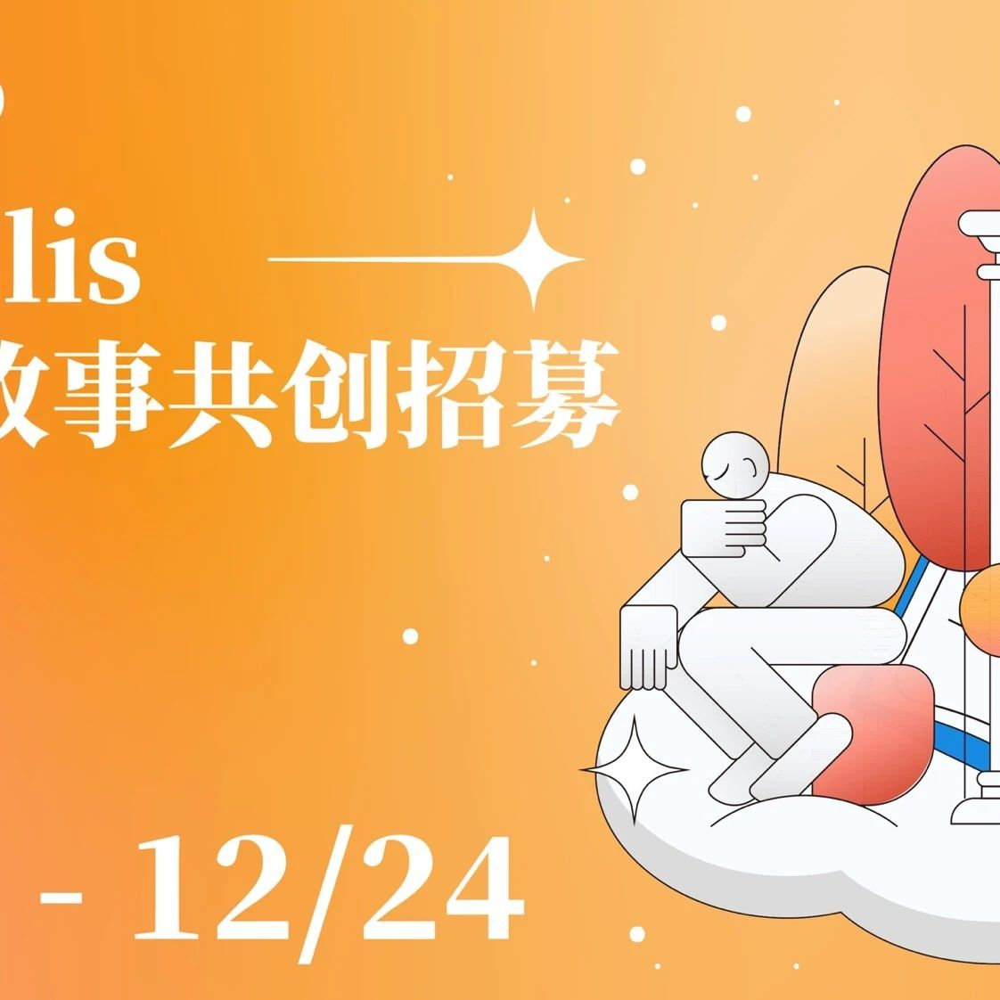

Our Polis | X城邦故事共创招募
作者: Our Polis 项目组
分类:
SeeDAO, 城邦故事共创, Our Polis
在数字时代的广阔网络中，SeeDAO如同一座充满活力的数字城邦，集结着全球创新者、思考者和行动者。我们邀请每位居民，在Twitter上分享你们对SeeDAO，SeeDAO生态项目，以及你们在SeeDAO的个人体验和经历的洞察和故事。

在数字时代的广阔网络中，SeeDAO如同一座充满活力的数字城邦，集结着全球创新者、思考者和行动者。在这里，大家通过代码、合作和智慧，共同铸造一个前所未有的生态系统。随着我们的城邦不断壮大，我们认识到了分享、交流和互动的重要性，这不仅能激发新的思想火花，还能促进彼此间的深度联系。Our Polis — 这个名字是我们对这个社区的期许，也是我们共同努力的结果。它不仅代表着一个由数字公民构成的社区，更代表着一种理念：在SeeDAO，每一个人都可以成为改变的一部分，每一个声音都可以成为历史的回音。我们邀请每位SeeDAO的居民，在X(Twitter)上分享你们对SeeDAO，SeeDAO生态项目，以及你们在SeeDAO的个人体验和经历的洞察和故事。通过文字，让我们一同感受每个项目和个人旅程背后的故事。为了更好地回馈大家的创作，本次活动我们准备了 60000 SCR（SeeDAO积分），奖励给共同讲出城邦故事的各位。请在参加活动前关注SeeDAO Twitter: @see_dao @en_SeeDAO我们邀请每位SeeDAO的居民，在X(Twitter)上分享你们对SeeDAO，SeeDAO生态项目，以及你们在SeeDAO的个人体验和经历的洞察和故事。通过文字，让我们一同感受每个项目和个人旅程背后的热情与智慧。在你的推文中加入 #seedao 和 #ourpolis 这两把钥匙，它们将打开通往排行榜的大门。只有同时携带这两个标签的推文、转发和评论，才能成为我们评选的对象。无论是中文的诗意阐述还是英文的简洁表达，每一种语言都是我们SeeDAO城邦的通行证。所有语言的内容都将被计入活动统计。在活动结束时，我们将我们将通过Wormhole3协议对推文的质量进行评估，计算credit并生成两个排行榜：前10位在credit累计上名列前茅的参赛者，将根据其credit数量占前10名参赛者总credit的比例，分享 20000 SCR奖励。前50位在credit累计上最活跃的参赛者，同样将根据其credit数量在前50名中所占比例，分享30000 SCR奖励。每周，我们将通过Wormhole3协议对推文的质量进行评估。最杰出的创作者将获得1000 SCR的奖励。榜单将在每周三公布。在SeeDAO，每一位成员都是我们的城邦中不可或缺的力量。每一个故事、每一条见解，都像是砌在城墙上的砖石，让这个城邦更加富有活力。不要犹豫，拿起你的羽毛笔，在SeeDAO的城墙上书写你的篇章。让我们在Twitter上以#seedao 和 #ourpolis 标签汇聚智慧，共同绘制出属于我们所有人的“Our Polis”。